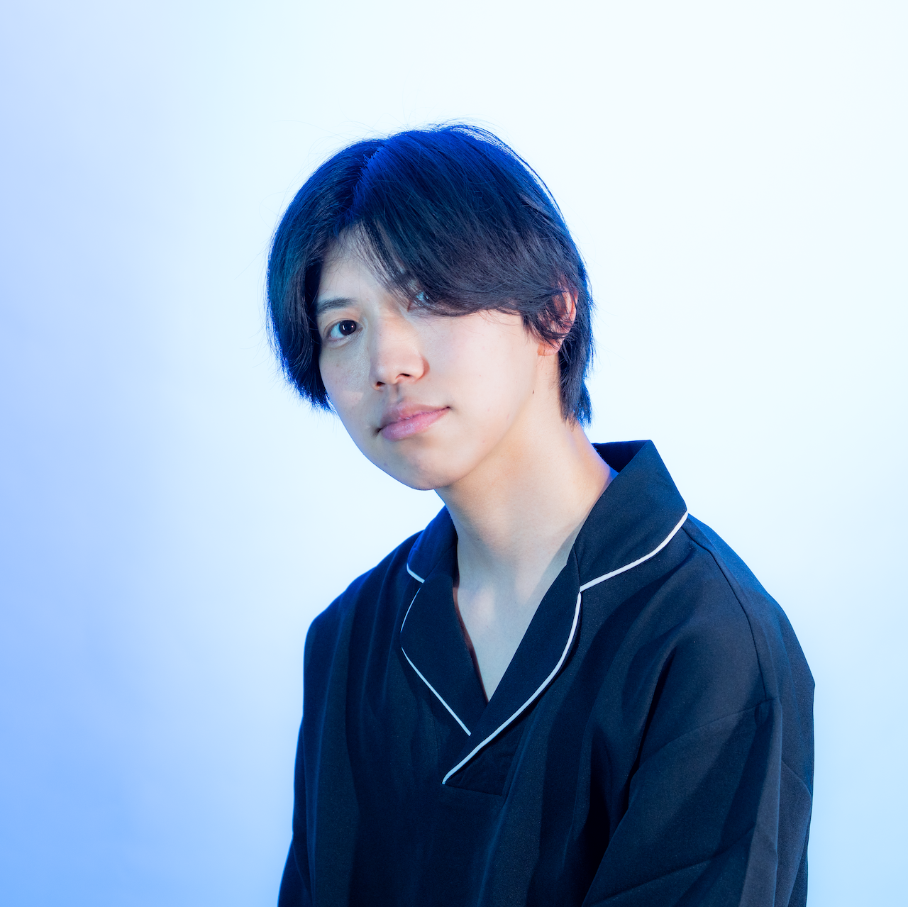

Ryosei Kojima
筑波大学大学院 情報学学位プログラム 博士後期課程
デジタルネイチャー研究室（落合陽一 研究室）
空気渦輪を用いた非接触触覚提示の研究

空気渦輪を用いた非接触触覚提示システムの研究開発を5年以上にわたり主導し、James Dyson Award 国内最優秀賞をはじめ複数の受賞歴を有する。HIFU（高密度集束超音波）によるアクリル板エンボス加工の原理解明に向けた実験系設計・実験遂行を担当し、共著論文がACM CHI 2024に採択された。
従来の金型を用いたエンボス加工の制約を解消するため、高強度集束超音波（HIFU）により金型不要でアクリル板に任意のエンボスパターンを形成する手法を提案した。HIFU素子・水槽・XYZプロッタ・アンプ・オシロスコープ等を組み合わせた実験系を構築し、振幅（8.90〜26.7 Vrms）・照射時間（1〜50秒）・焦点距離（32.25〜69.75 mm）の全組み合わせ計51点×9条件の網羅的実験を実施。エンボス高さ・透明度・線生成を制御するパラメータ条件を特定した。
ろう・難聴者が話しかけられた瞬間に気づけないという課題に対し、空気渦輪を用いて頭部に非接触で触覚刺激を提示するシステムを開発した。空気渦輪生成理論の検討からプロトタイピング、制御アルゴリズム開発、ユーザスタディまでの全工程を管理し、1〜2 mの距離で90%以上の感知精度を達成した。
ryosei.kojima@digitalnature.slis.tsukuba.ac.jp
kojima.8721@gmail.com